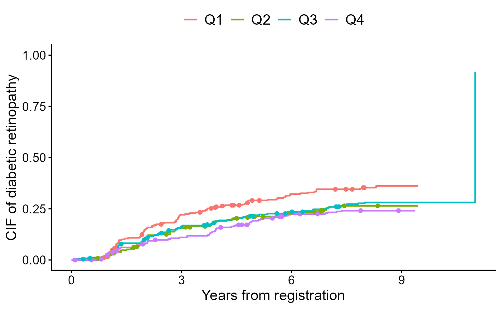

Extract per-stratum event times from a formula and data
Source:R/extract_time_to_event.R
extract_time_to_event.RdCreates a list of event times that can be passed to downstream
visualization or analysis functions such as competing.risk.time or
intercurrent.event.time in cifplot() and cifpanel().
Event types are specified by event 1, event 2, censoring, or user-specified codes.
Usage
extract_time_to_event(
formula,
data,
subset.condition = NULL,
na.action = na.omit,
which_event = c("event2", "event1", "censor", "censoring", "user_specified"),
code.event1 = 1,
code.event2 = 2,
code.censoring = 0,
user_specified_code = NULL,
readUniqueTime = TRUE,
dropEmpty = TRUE
)Arguments
- formula
A model formula specifying the outcome and (optionally)
strata().- data
A data frame containing variables in
formula.- subset.condition
Optional expression (as a character string) defining a subset of
datato analyse. Defaults toNULL.- na.action
Function to handle missing values (default:
na.omitin stats).- which_event
One of
"event1","event2","censor","censoring", or"user_specified", indicating which event type to extract times for.- code.event1, code.event2, code.censoring
Integer codes representing the event and censoring categories. Defaults are
1,2, and0, respectively.- user_specified_code
When
which_event = "user_specified", the integer event code to extract (e.g., 3 for an intercurrent event).- readUniqueTime
Logical if
TRUE, only unique and sorted time points are returned for each stratum.- dropEmpty
Logical if
TRUE(default), strata with no events are dropped from the returned list. Set toFALSEto retain empty strata asnumeric(0)vectors (useful for diagnostics or consistent list length).
Value
A named list of numeric vectors, where each element corresponds to a stratum and contains the event times of the selected type.
Details
This function is typically used internally by plotting and model functions, but can also be called directly to inspect the per-stratum event-time structure of a data frame.
![[Stable]](figures/lifecycle-stable.svg)
See also
polyreg() for log-odds product modeling of CIFs; cifcurve() for KM/AJ estimators; cifplot() for display of a CIF; cifpanel() for display of multiple CIFs; ggsurvfit::ggsurvfit, patchwork::patchwork and modelsummary::modelsummary for display helpers.
Examples
data(diabetes.complications)
output <- extract_time_to_event(Event(t,epsilon) ~ fruitq,
data = diabetes.complications,
which_event = "event2")
cifplot(Event(t,epsilon) ~ fruitq,
data = diabetes.complications,
outcome.type="COMPETING-RISK",
add.conf=FALSE,
add.risktable=FALSE,
add.censor.mark=FALSE,
add.competing.risk.mark=TRUE,
competing.risk.time=output,
label.y='CIF of diabetic retinopathy',
label.x='Years from registration')
